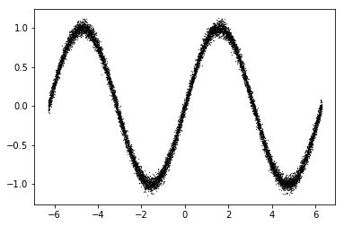
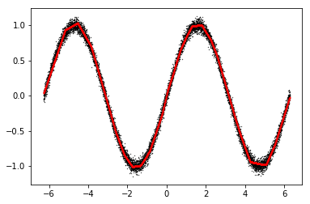

Tensorflow is a framework to define a series of computations. You
define inputs, what operations should be performed, and then Tensorflow
will compute the outputs for you.
Below is a simple high-level example:
1 2 3 4 5 6 7 8 9 10 11 12 13 14 15
# create the session you'll work in # you can think of this as a "blank piece of paper" that you'll be writing math on sess = tf_reset()
# define your inputs a = tf.constant(1.0) b = tf.constant(2.0)
# do some operations c = a + b
# get the result c_run = sess.run(c)
print('c = {0}'.format(c_run))
c = 3.0
1. How to input data
Tensorflow has multiple ways for you to input data. One way is to
have the inputs be constants:
1 2 3 4 5 6 7 8 9 10 11 12 13
sess = tf_reset()
# define your inputs a = tf.constant(1.0) b = tf.constant(2.0)
# do some operations c = a + b
# get the result c_run = sess.run(c)
print('c = {0}'.format(c_run))
c = 3.0
However, having our inputs be constants is inflexible. We want to be
able to change what data we input at runtime. We can do this using
placeholders:
1 2 3 4 5 6 7 8 9 10 11 12 13 14 15
sess = tf_reset()
# define your inputs a = tf.placeholder(dtype=tf.float32, shape=[1], name='a_placeholder') b = tf.placeholder(dtype=tf.float32, shape=[1], name='b_placeholder')
# do some operations c = a + b
# get the result c0_run = sess.run(c, feed_dict={a: [1.0], b: [2.0]}) c1_run = sess.run(c, feed_dict={a: [2.0], b: [4.0]})
Now that we can input data and perform computations, we want some of
these operations to involve variables that are free parameters, and can
be trained using an optimizer (e.g., gradient descent).
First, let's create some data to work with:
1 2 3 4 5 6 7 8 9
sess = tf_reset()
# inputs b = tf.constant([[1., 2., 3.]], dtype=tf.float32)
So far we haven't said yet how to optimize these variables. We'll
cover that next in the context of an example.
4.
How to train a neural network for a simple regression problem
We've discussed how to input data, perform operations, and create
variables. We'll now show how to combine all of these---with some minor
additions---to train a neural network on a simple regression
problem.
First, we'll create data for a 1-dimensional regression problem:
1 2 3 4 5
# generate the data inputs = np.linspace(-2*np.pi, 2*np.pi, 10000)[:, None] outputs = np.sin(inputs) + 0.05 * np.random.normal(size=[len(inputs),1])
<matplotlib.collections.PathCollection at 0x7ffa1bed23c8>

png
The below code creates the inputs, variables, neural network
operations, mean-squared-error loss, gradient descent optimizer, and
runs the optimizer using minibatches of the data.
# initialize variables sess.run(tf.global_variables_initializer()) # create saver to save model variables saver = tf.train.Saver()
# run training batch_size = 32 for training_step in range(10000): # get a random subset of the training data indices = np.random.randint(low=0, high=len(inputs), size=batch_size) input_batch = inputs[indices] output_batch = outputs[indices] # run the optimizer and get the mse _, mse_run = sess.run([opt, mse], feed_dict={input_ph: input_batch, output_ph: output_batch}) # print the mse every so often if training_step % 1000 == 0: print('{0:04d} mse: {1:.3f}'.format(training_step, mse_run)) saver.save(sess, './tmp/model.ckpt')
INFO:tensorflow:Restoring parameters from /tmp/model.ckpt
<matplotlib.collections.PathCollection at 0x7ff9dc62a550>

png
Not so hard after all! There is much more functionality to Tensorflow
besides what we've covered, but you now know the basics.
5. Tips and tricks
(a) Check your dimensions
1 2 3 4 5
# example of "surprising" resulting dimensions due to broadcasting a = tf.constant(np.random.random((4, 1))) b = tf.constant(np.random.random((1, 4))) c = a * b assert c.get_shape() == (4, 4)
(b) Check what
variables have been created
1 2 3 4 5
sess = tf_reset() a = tf.get_variable('I_am_a_variable', shape=[4, 6]) b = tf.get_variable('I_am_a_variable_too', shape=[2, 7]) for var in tf.global_variables(): print(var.name)
I_am_a_variable:0
I_am_a_variable_too:0
(c)
Look at the tensorflow API,
or open up a python terminal and investigate!
1
help(tf.reduce_mean)
Help on function reduce_mean in module tensorflow.python.ops.math_ops:
reduce_mean(input_tensor, axis=None, keepdims=None, name=None, reduction_indices=None, keep_dims=None)
Computes the mean of elements across dimensions of a tensor. (deprecated arguments)
SOME ARGUMENTS ARE DEPRECATED. They will be removed in a future version.
Instructions for updating:
keep_dims is deprecated, use keepdims instead
Reduces `input_tensor` along the dimensions given in `axis`.
Unless `keepdims` is true, the rank of the tensor is reduced by 1 for each
entry in `axis`. If `keepdims` is true, the reduced dimensions
are retained with length 1.
If `axis` is None, all dimensions are reduced, and a
tensor with a single element is returned.
For example:
Args:
input_tensor: The tensor to reduce. Should have numeric type.
axis: The dimensions to reduce. If `None` (the default),
reduces all dimensions. Must be in the range
`[-rank(input_tensor), rank(input_tensor))`.
keepdims: If true, retains reduced dimensions with length 1.
name: A name for the operation (optional).
reduction_indices: The old (deprecated) name for axis.
keep_dims: Deprecated alias for `keepdims`.
Returns:
The reduced tensor.
@compatibility(numpy)
Equivalent to np.mean
Please note that `np.mean` has a `dtype` parameter that could be used to
specify the output type. By default this is `dtype=float64`. On the other
hand, `tf.reduce_mean` has an aggressive type inference from `input_tensor`,
for example:
1 2 3 4
x = tf.constant([1, 0, 1, 0]) tf.reduce_mean(x) # 0 y = tf.constant([1., 0., 1., 0.]) tf.reduce_mean(y) # 0.5
@end_compatibility
(d)
Tensorflow has some built-in layers to simplify your code.
1
help(tf.contrib.layers.fully_connected)
Help on function fully_connected in module tensorflow.contrib.layers.python.layers.layers:
fully_connected(inputs, num_outputs, activation_fn=<function relu at 0x7ffa20054c80>, normalizer_fn=None, normalizer_params=None, weights_initializer=<function variance_scaling_initializer.<locals>._initializer at 0x7ff9f2ecd158>, weights_regularizer=None, biases_initializer=<tensorflow.python.ops.init_ops.Zeros object at 0x7ff9f2ecc780>, biases_regularizer=None, reuse=None, variables_collections=None, outputs_collections=None, trainable=True, scope=None)
Adds a fully connected layer.
`fully_connected` creates a variable called `weights`, representing a fully
connected weight matrix, which is multiplied by the `inputs` to produce a
`Tensor` of hidden units. If a `normalizer_fn` is provided (such as
`batch_norm`), it is then applied. Otherwise, if `normalizer_fn` is
None and a `biases_initializer` is provided then a `biases` variable would be
created and added the hidden units. Finally, if `activation_fn` is not `None`,
it is applied to the hidden units as well.
Note: that if `inputs` have a rank greater than 2, then `inputs` is flattened
prior to the initial matrix multiply by `weights`.
Args:
inputs: A tensor of at least rank 2 and static value for the last dimension;
i.e. `[batch_size, depth]`, `[None, None, None, channels]`.
num_outputs: Integer or long, the number of output units in the layer.
activation_fn: Activation function. The default value is a ReLU function.
Explicitly set it to None to skip it and maintain a linear activation.
normalizer_fn: Normalization function to use instead of `biases`. If
`normalizer_fn` is provided then `biases_initializer` and
`biases_regularizer` are ignored and `biases` are not created nor added.
default set to None for no normalizer function
normalizer_params: Normalization function parameters.
weights_initializer: An initializer for the weights.
weights_regularizer: Optional regularizer for the weights.
biases_initializer: An initializer for the biases. If None skip biases.
biases_regularizer: Optional regularizer for the biases.
reuse: Whether or not the layer and its variables should be reused. To be
able to reuse the layer scope must be given.
variables_collections: Optional list of collections for all the variables or
a dictionary containing a different list of collections per variable.
outputs_collections: Collection to add the outputs.
trainable: If `True` also add variables to the graph collection
`GraphKeys.TRAINABLE_VARIABLES` (see tf.Variable).
scope: Optional scope for variable_scope.
Returns:
The tensor variable representing the result of the series of operations.
Raises:
ValueError: If x has rank less than 2 or if its last dimension is not set.
(e) Use
variable
scope to keep your variables organized.
(f)
You can specify which GPU you want to use and how much memory you want
to use
1 2 3 4 5 6 7 8 9 10 11 12 13
gpu_device = 0 gpu_frac = 0.5
# make only one of the GPUs visible import os os.environ["CUDA_VISIBLE_DEVICES"] = str(gpu_device)
# only use part of the GPU memory gpu_options = tf.GPUOptions(per_process_gpu_memory_fraction=gpu_frac) config = tf.ConfigProto(gpu_options=gpu_options)
# create the session tf_sess = tf.Session(graph=tf.Graph(), config=config)
(g)
You can use tensorboard
to visualize and monitor the training process.